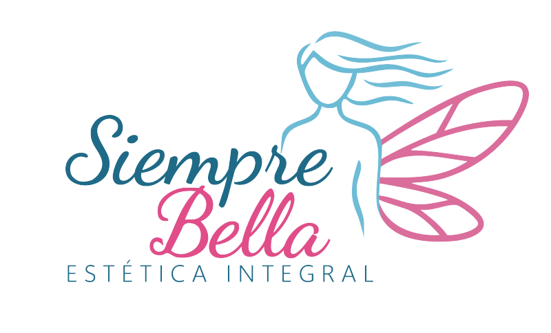
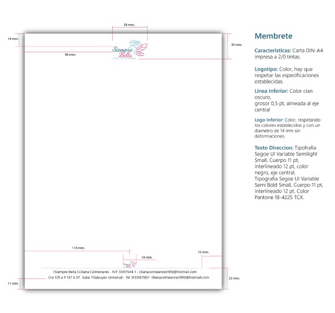
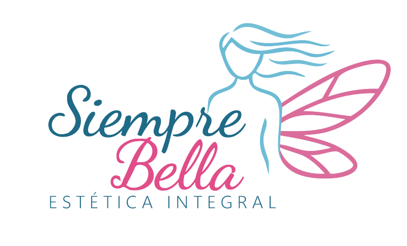
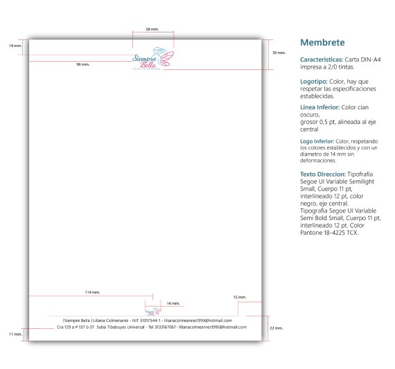
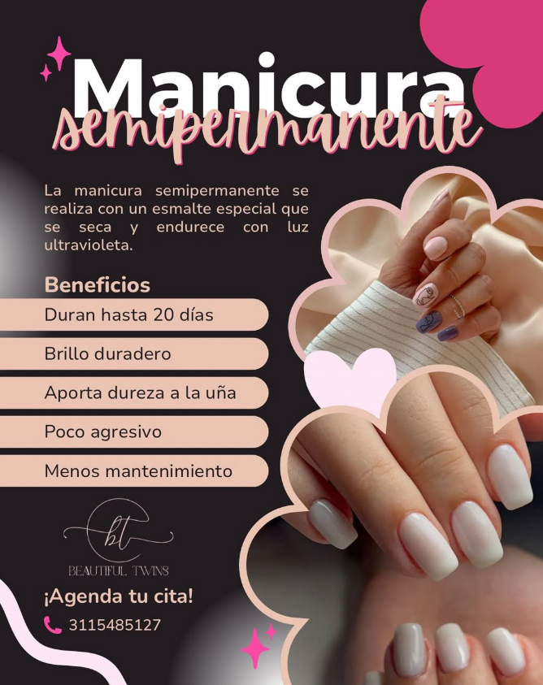
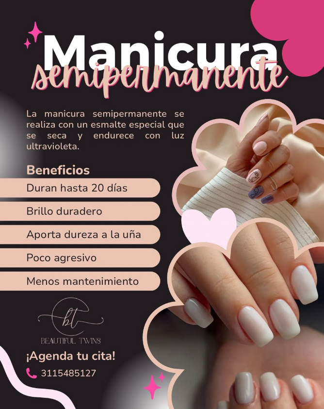
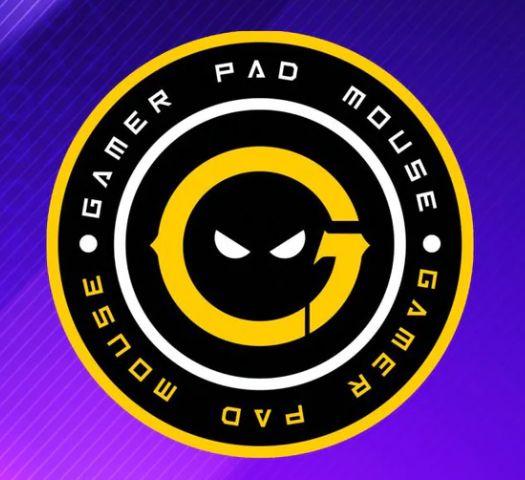
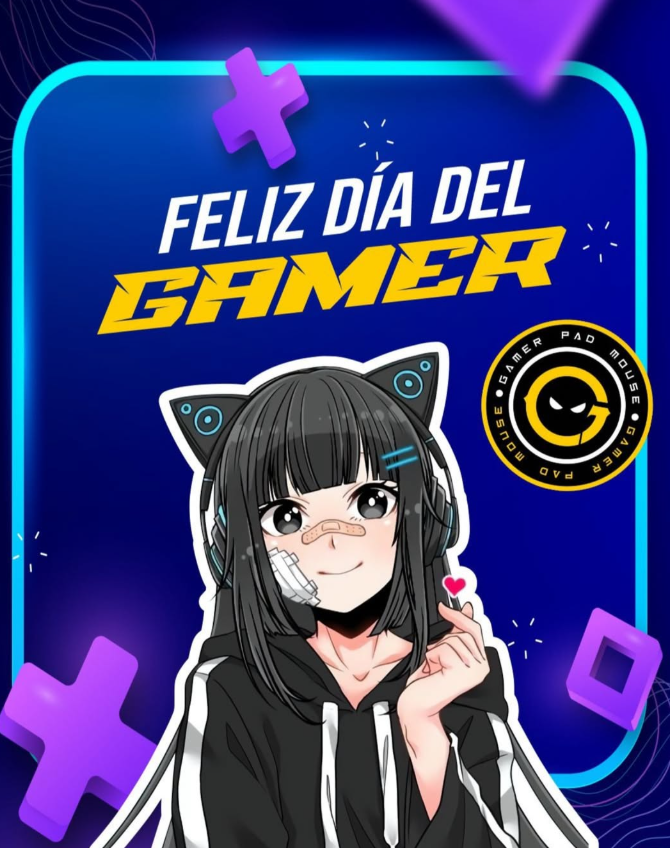
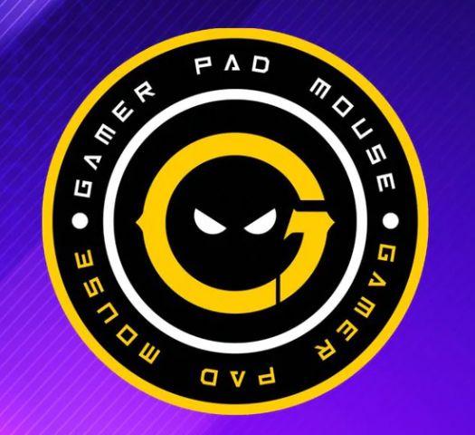
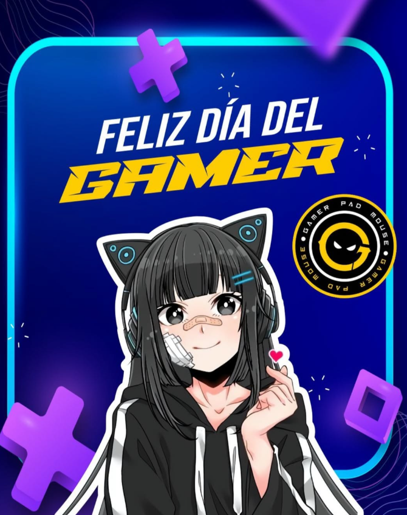

Beautiful Twins
Beautiful Twins nació como una marca que celebra la autenticidad femenina, resaltando la belleza real, la complicidad entre amigas y esa vibra fresca que inspira seguridad y conexión. Desde sus inicios, buscaba consolidarse como una marca cercana, moderna y con una identidad clara tanto en lo visual como en su presencia digital.
Como Community Manager y diseñador visual, asumí el reto de construir la marca desde cero:
su voz, su estética, su personalidad y su estrategia de comunicación.
El objetivo era que Beautiful Twins no solo se viera bien, sino que se sintiera como una comunidad.
Desarrollé una identidad visual coherente y flexible, basada en tonos suaves pero vibrantes, tipografías amigables y una dirección visual que transmitiera cercanía, diversión y confianza. Cada pieza fue diseñada pensando en la audiencia: mujeres jóvenes que buscan inspiración, autenticidad y contenido real.


 





 


 


